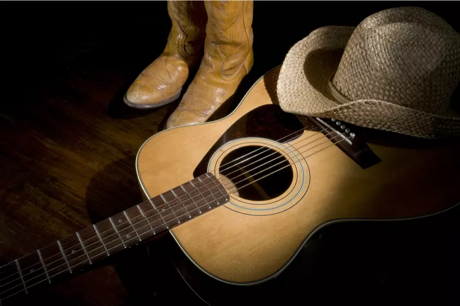

história da Música Sertaneja
A música sertaneja tem sua origem nas modas de viola, quando as pessoas se reuniam em roda para contar histórias – os chamados “causos” – comer e beber. A viola é um instrumento de cordas que chegou à América Portuguesa com os primeiros colonizadores.
Os jesuítas o utilizaram para catequizar os indígenas, que tinham especial predileção pela música. A viola também era empregada em festas religiosas populares, como procissões, Folia de Rei, festas do padroeiro, rezas do rosário, etc. Daí surgiu o modo anasalado de cantar, onde a letra tem mais importância que a melodia e o canto mais parece um lamento. As modas de viola eram um costume do Brasil rural, quando as tropas que conduziam o gado paravam nas fazendas. Sempre havia alguém que dedilhava o instrumento, assim como existia aquele que contava “causos” em torno de uma fogueira. Com o passar do tempo, o modelo de música sertaneja encontrada no oeste paulista, norte do Paraná, Minas Gerais, Goiás foi se cristalizando. A dupla caipira cantava uma melodia simples, sem ornamentos, onde existia a voz principal e a segunda voz entoando uma terça abaixo, acompanhada da viola e, posteriormente, do violão.Música Caipira
Sertaneja ou Sertanejo Universitário? Para muitos estudiosos a música caipira pertence a algo maior, que é a música sertaneja. Como afirma o pesquisador musical Zuza Homem de Mello:A música caipira é uma parte da música sertaneja, localizada no estado de São Paulo. A música sertaneja é a música do sertão brasileiro, de todo sertão brasileiro. Deste modo, cada região vai desenvolver seu próprio estilo. No Centro-Oeste verificamos que a música sertaneja sofre influência de danças como o siriri ou o catira (ou cateretê). Já no Nordeste, elementos da cultura árabe, o baião e o xaxado darão a cor para a melodia e os ritmos sertanejos.
Exemplo:
A dupla Zé Mulato e Cassiano é uma das mais antigas em atividade no Brasil A música caipira retrata o Brasil rural através do canto e do acompanhamento da viola. Mais tarde, seriam incorporados o violão e a sanfona. Foi Cornélio Pires, compositor e empresário de Tietê (SP), que apostou no sucesso comercial deste gênero musical. Por sua iniciativa, em 1929, foi realizada a primeira gravação do tema “Jorginho do Sertão”, de sua autoria, registrada pela duplaMariano & Caçula. Com o advento do rádio, o som caipira se expandiu pelo Brasil e chegou até à cidade grande, especialmente no Rio de Janeiro. Igualmente, à medida que o país se industrializava e o êxodo rural ocorria, a música caipira se espalhou por todo território brasileiro. É preciso lembrar que o termo "caipira" era visto como algo negativo nos anos 20 e 30. Com as ideias de industrialização, o caipira representava o ambiente rural que a República queria superar. Desta forma, o modo de falar e os costumes do caipira foram criticados na imprensa e na literatura através de personagens como o Jeca Tatu, de Monteiro Lobato, por exemplo.
Música Sertaneja
Chitãozinho e Chororó misturaram a linguagem da música pop com a música caipira Para escapar do preconceito, a música caipira foi denominada música sertaneja e agregou novos instrumentos e temas ao seu repertório. Nos anos 70, duplas como Milionário & José Rico incorporaram o jeito de cantar e instrumentação oriunda da música ranchera mexicana. Por sua parte, nos anos 80, foram acrescentados os sintetizadores, as viradas de bateria, e melodias pop. Podemos citar Leandro & Leonardo, Zezé di Camargo & Luciano, Roberta Miranda, João Paulo & Daniel, entre muitos outros, como representantes desta vertente. A música sertaneja, desta época, foi usada em trilhas sonoras de novelas e começou a aparecer no horário nobre da televisão.
Sertanejo Universitário
Michel Teló conseguiu levar o sertanejo universitário para todo o mundo O sertanejo universitário seria a música sertaneja adaptada ao século XXI e herdeiro direto das mudanças produzidas neste gênero nos anos 80. Por sua vez, o sertanejo universitário dispensa as duplas e pode ser cantada apenas por uma pessoa. Incluiu as batidas e a estética do country americano, bem como temáticas românticas e urbanas. Destaca-se também o surgimento de duplas e bandas femininas. Outra característica importante é que o sertanejo universitário é feito com o propósito exclusivo de fazer as pessoas dançarem. Por sua parte, a música caipira guarda as duas vertentes: dançar e escutar a letra. Desta maneira, para diferenciar o sertanejo do sertanejo universitário, utiliza-se o termo "música sertaneja de raiz" para designar o gênero praticado até o final do século XX.Sertanejo Raiz
Com o surgimento do sertanejo universitário houve necessidade de diferenciá-lo daquela música praticada no começo do século XX. Por isso, de maneira geral, denominam-se as canções compostas naquela época de "sertanejo de raiz". Segue abaixo uma lista com as dez músicas sertanejas de raiz mais conhecidas no Brasil. Pagode em Brasília:- Teddy Vieira e Lourival dos Santos
- Estrada da Vida, José Rico
- Jorginho do Sertão, Cornélio Pires
- Menino da Porteira, Teddy Vieira
- Chico Mineiro, Tonico e Francisco Ribeiro
- Tristeza do Jeca, Angelino de Oliveira
- Luar do Sertão, Luiz Gonzaga
- Chitãozinho e Xororó, Serrinha
- Romaria, Renato Teixeira
- Telefone Mudo, Trio Parada Dura